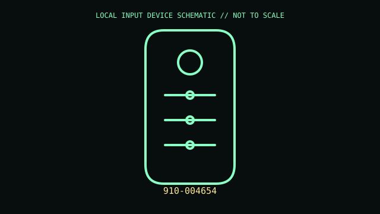

[ SPECIALIZED INPUT CONTROLLERS // IDENTIFIED COMPONENT ]
Logitech Spotlight Presentation Remote
Rechargeable presentation remote with on-screen pointer effects and host navigation controls.

MODEL IDENTIFICATION: 910-004654. Confirm complete SKU, package, region, and revision before compatibility claims.
Model specifications
| Catalog leaf | Specialized input controllers |
|---|---|
| Exact model / identifier | 910-004654 |
| Physical mechanism and primary specifications | Bluetooth LE or supplied USB receiver; rechargeable battery and USB charging; presentation controls include next/back and configurable pointer/highlight functions. |
| Compatibility and interface caveats | Advanced pointer effects require Logitech Presentation software and supported OS; basic key actions depend on presentation app. Confirm 910-004654 and receiver supplied with unit. |
| Revision identification | Record full product label, software/firmware version, and supplied accessories. Product-family versions may differ in connector, protocol, features, or host requirements. |
Preservation and service
Keep USB receiver with remote; charge before storage, avoid prying rechargeable enclosure, and preserve original USB charging cable.
Record condition and test setup separately from vendor specifications, including host OS and software.
Primary manufacturer sources
- Logitech Spotlight productManufacturer documentation; confirm exact PID, regional suffix, and hardware revision on the unit.
- Logitech Spotlight supportManufacturer documentation; confirm exact PID, regional suffix, and hardware revision on the unit.
Retain relevant manual revisions with the equipment record; vendor support pages can change.